⑧ 认证与授权：谁在证明身份，谁在决定能做什么
对象：cds.requires.auth · @requires / @restrict · xs-security.json · mta.yaml 的 xsuaa 资源 · cockpit 角色集合 · JWT 的 scope。每个手顺都给出可观察的验证（状态码 401 / 403 / 200）。
0. 本页地图
权限这件事在 CAP 里被劈成了两半，而且两半都盖不住对方：
证明「你是谁」、签发 JWT + ② CAP 之内（CDS 注解 + 运行时）
决定「你能做什么」 = 可用的接口
200 / 401 / 403
本页按这个顺序走：先建立认证链路的心智模型（1–2 节），再把本地开发的身份模拟弄准（3–5 节），
然后用 CDS 注解表达授权规则（6–8 节），最后接到 XSUAA 实例与角色集合上（9–11 节），
并以排错表与安全基线收尾。示范项目（图书受注管理）的
srv/book-order-service.cds、xs-security.json、mta.yaml、approuter/xs-app.json 会在第 9–11 节逐段出现。
- 解释清楚 401 与 403 的分工，并知道在 CAP 里分别是谁返回的；
- 说清
mocked/dummy/basic/jwt（含xsuaa）的行为差异，尤其是「为什么本地测匿名 401 绝不能用 dummy」； - 用
@requires与@restrict（grant / to / where）写出服务级、实体级、动作级与行级授权； - 维护
xs-security.json（scopes / attributes / role-templates / role-collections）并说明它如何被mta.yaml引用； - 部署后在 cockpit 建角色集合、加用户，取出 JWT 并验证 401 / 403 / 200 三态；
- 用第 12 节的排错表把「用户在界面上点不动」定位到模型、token 还是角色集合。
1. 认证 vs 授权：两个不同的问题
CAP 文档把这件事讲得非常直白：认证（authentication）验证身份与随之而来的 claim，回答 who； 授权（authorization）控制这个用户能如何与应用资源交互，回答 what / which。 授权依赖身份信息，所以认证是授权的前提；但反过来，认证成功不代表能访问任何东西——服务默认没有访问控制， 注解写了什么才生效什么。
| 问题 | 谁负责 | CAP 里的对应物 | 失败时的表现 |
|---|---|---|---|
| 你是谁 | IdP 签发凭据 → XSUAA 发 JWT（或本地 mock 认证中间件） | cds.requires.auth.kind、req.user.id | 401 Unauthorized（没有可用凭据） |
| 你能做什么 | CDS 模型里的 @requires / @restrict，由 CAP 运行时按通用框架强制 | req.user.roles、@restrict.grant/to/where | 403 Forbidden（凭据有效但角色/条件不足） |
| 数据行能不能看到 | @restrict 的 where 条件（instance-based authorization） | CQN 查询上附加的过滤条件 | 403（写）/ 结果被过滤（读） |
| 哪些操作天生不允许 | @readonly / @insertonly / @Capabilities | 静态访问控制（与用户无关） | 405 / 403（取决于方法与适配器） |
- CDS 服务默认没有访问控制：不写注解，只要通过认证就能访问所有实体。安全不是默认值，是建模产物。
- CAP 不能替你发明授权模型：注解只是执行器；规则本身取决于你的业务（谁能提交订单、能看哪些订单）。
2. 认证链路：用户 → IdP → XSUAA → JWT → CAP
把这条链路的每一跳的责任摆清楚，后面所有的「401 还是 403」判断都会变成机械操作：
浏览器 / curl→ IdP
默认身份提供者或企业 IdP→ XSUAA
交换/签发 JWT→ JWT（含 scope）
Authorization: Bearer …→ approuter
登录 + 转发→ CAP 运行时
解析身份 + 执行注解→ 服务 / 实体
200 / 403
| 环节 | 它做什么 | 它不做什么 | 本地开发时的替身 |
|---|---|---|---|
| IdP | 验证用户凭据（密码/证书/企业 SSO）、返回断言 | 不知道 CAP 的角色 | —（本地没有 IdP） |
| XSUAA | 按 xs-security.json 把角色映射成 scope 放进 JWT | 不判断业务规则 | kind: mocked 的假用户 |
| approuter | 触发登录流程、把 JWT 放进对后端的 Authorization 头 | 不做授权判断 | 本地直连 4004 端口（无 approuter） |
| CAP 运行时 | 校验 token、构造 req.user、执行 @requires / @restrict | 不做登录交互（那是 approuter 的事） | 同左（本地也走同一个运行时） |
CAP 从 JWT 里取出的身份信息有固定映射（下表来自 CAP 的「Users & Roles」章节，Node.js 与 Java 一致）：
| 用户属性 | Node.js | XSUAA JWT 里的来源 | 在注解里怎么引用 |
|---|---|---|---|
| 登录名 | req.user.id | user_name | $user |
| 租户 | req.tenant | zid | $tenant |
| 属性 | req.user.attr.<x> | xs.user.attributes.<x> | $user.<x> |
| 角色 | req.user.is('view') | scopes（去掉 xsappname 前缀） | to: 'view' |
@sap/cds 9.9.3 的 lib/srv/middlewares/auth/jwt-auth.js 里，角色是按
scope.replace(xsappname + '.', '') 得到的——也就是说 CAP 会剥掉 xsappname 前缀再与注解比对。
这条源码事实解释了第 12 节里一整类「云端 403」错误的根因，也解释了为什么 JWT 里写
demo-node-trial-dev.view、模型里却只写 view。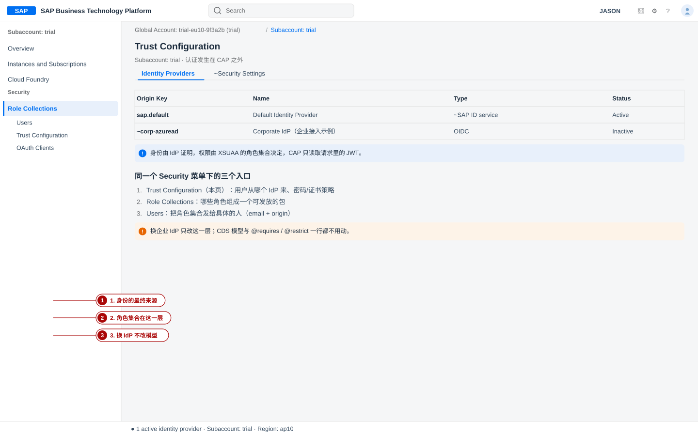
req.user.tokenInfo 之类）：
CAP 提供了抽象的 req.user，这样换 IdP / 换认证策略时业务逻辑不用改。3. 本地开发的身份模拟：cds.requires.auth.kind 的四个取值
本地没有 IdP，也没有 XSUAA。CAP 为此提供了几种认证中间件，通过 cds.requires.auth.kind 选择；
每种的可信度完全不同，用错了会得出错误的结论。
| kind | 它验证什么 | 匿名请求 | 角色从哪来 | 什么时候用 |
|---|---|---|---|---|
mocked | HTTP Basic 头里的用户名/密码（用 cds.requires.auth.users 里的配置校验） | 不拦（放行匿名） | 配置里写的 roles | 本地开发默认；验证 401 与角色差异 |
dummy | 什么都不验证：每个请求都当成「特权用户」 | 放行（这也是它的目的） | 全部角色都为真 | 临时关掉全部注解做排障；绝不能用来测 401 |
basic | 同样走 Basic，但不加载内置的 mock 用户，用户完全由你配置 | 同上（按 login_required） | 配置里写的 roles | 想避免「alice/bob 通吃」时替换 mocked |
jwt / xsuaa | 校验 XSUAA 签发的 JWT（签名、issuer、有效期） | 不拦（但后续 @requires 会拦） | JWT 的 scope（去前缀） | 云端生产；本地联调需要绑定 XSUAA（cds bind） |
ias | 校验 IAS 的 JWT（含 x5t / proof-of-possession 校验） | 不拦 | 不含 scope，角色要靠 AMS 注入 | 用 SAP Cloud Identity Services 的组织 |
自定义 impl | 你自己的中间件（必须设置 cds.context.user） | 自己决定 | 自己决定 | 特殊网关/测试桩 |
对照用一句话概括：dummy 是「关掉权限」，mocked 是「假的登录」，jwt 是「真的登录」。
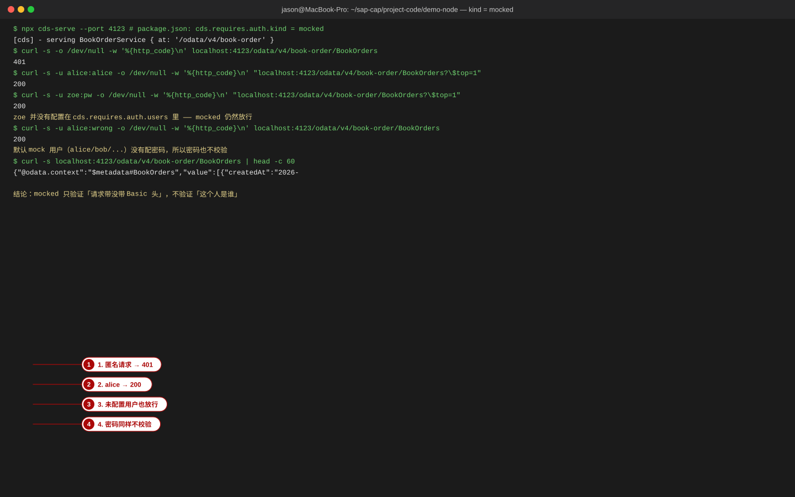
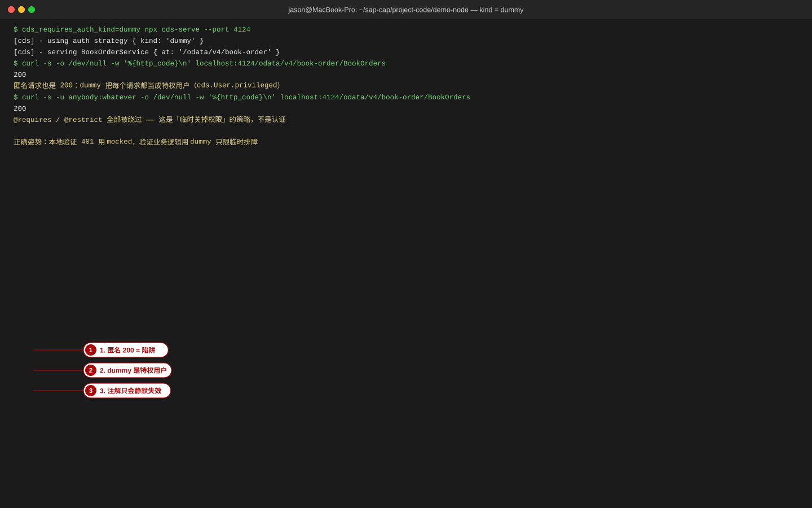
dummy 的实现在 CAP 里只有两行：req.user = cds.User.privileged; next()——
它把每个请求（包括没有 Authorization 头的匿名请求）都当成长着所有角色的特权用户。
所以「匿名必须 401」这类断言在 dummy 下必然失败（实测见上方画面：匿名请求返回 200）。
做认证相关的测试，请把 kind 保持在 mocked。4. mock 用户的规则与自定义
4-1 内置用户比想象的多
@sap/cds 默认带的 mock 用户是 alice（admin）、bob（cds.ExtensionDeveloper）、
carol、dave、erin、fred、me、yves…… 并且默认还有一条
"*": true——其它任何用户名也允许登录。用一条命令确认当前生效的配置（本机实测输出）：
bash$ npx cds env get requires.auth { "restrict_all_services": false, "kind": "mocked", "users": { "alice": { "tenant": "t1", "roles": [ "admin" ] }, "bob": { "tenant": "t1", "roles": [ "cds.ExtensionDeveloper" ] }, "carol": { "tenant": "t1", "roles": [ "admin", "cds.ExtensionDeveloper" ] }, "dave": { "tenant": "t1", "roles": [ "admin" ], "features": [] }, "erin": { "tenant": "t2", "roles": [ "admin", "cds.ExtensionDeveloper" ] }, "fred": { "tenant": "t2", "features": [ "isbn" ] }, "me": { "tenant": "t1", "features": [ "*" ] }, "yves": { "roles": [ "internal-user" ] }, "*": true }, "tenants": { "t1": { "features": [ "isbn" ] }, "t2": { "features": "*" } } }
- 默认用户没有密码：
alice配置里没有password字段，所以-u alice:wrong也返回 200（密码没配就不校验）； - 任意用户名放行：
"*": true让-u zoe:pw也返回 200——这是本站 OData 验收脚本里 「未知用户 → 401」这一条 FAIL 的唯一原因（脚本对 mocked 的期望写错了，不是产品缺陷）； - 角色是纯字符串：
alice的角色是admin，跟 XSUAA 里的 scope 没有任何自动关联—— 本地要模拟to: 'view'，就得在配置里写roles: ['view']。
4-2 自定义用户、角色与属性
json{ "cds": { "requires": { "auth": { "kind": "mocked", "users": { "alice": { "password": "alice", "roles": ["view"], "tenant": "t1" }, "bob": { "password": "bob", "roles": [], "tenant": "t1" }, "zoe": { "password": "zoe", "roles": ["view", "submit"], "tenant": "t1" }, "amy": { "password": "amy", "roles": ["view"], "attr": { "country": ["JP"] } }, "*": false } } } } }
- 动作：把
alice/bob/zoe写成与@restrict里to:相同的角色名—— 这样本地测出来的通过与云端 XSUAA 下的通过含义一致（云端角色名就是 scope 名去前缀）。 - 动作：
"*": false关掉通吃；给要用到的用户显式配密码，否则密码不校验。 - 动作：需要测行级授权时给用户配
attr（对应 JWT 的xs.user.attributes， 在注解里用$user.<x>引用）。 - 验证：
npx cds env get requires.auth能看到合并后的配置； 用-u alice:wrong请求受保护资源应得 401（密码不匹配 → 触发登录）；用未配置的用户名应得 401（"*": false）。
users 是与内置默认值合并的：
不写 "*": false，通吃的默认值仍然生效；要彻底只留自己的用户，必须显式覆盖 "*"。5. 手顺：本地把 401 / 403 / 200 三态跑出来
目标：在没有 BTP 账号的情况下，用「服务的 @requires + 实体的 @restrict」把三种结果都复现一遍。
这是后面所有云端问题的对照基线。
- 动作：在模型里加一条按角色分的授权（示范项目的实体级授权，第 10 节会再接上 XSUAA 的角色名）：
cds
annotate BookOrderService.BookOrders with @(restrict: [ { grant: 'READ', to: 'view' }, { grant: 'submitOrder', to: 'submit' } ]); - 动作：按 4-2 的写法配置
users：alice只有view、bob什么都没有、zoe有view与submit，并写"*": false。 - 动作：起服务并用 curl 打三种身份（本机实测，服务端口 4131、服务路径
/odata/v4/book-order）：bash$ curl -s -o /dev/null -w '%{http_code}\n' localhost:4131/odata/v4/book-order/BookOrders 401 $ curl -s -u alice:alice -o /dev/null -w '%{http_code}\n' "localhost:4131/odata/v4/book-order/BookOrders?\$top=1" 200 $ curl -s -u bob:bob -o /dev/null -w '%{http_code}\n' "localhost:4131/odata/v4/book-order/BookOrders?\$top=1" 403 $ curl -s -u alice:wrong -o /dev/null -w '%{http_code}\n' "localhost:4131/odata/v4/book-order/BookOrders?\$top=1" 401 $ curl -s -u mimo:pw -o /dev/null -w '%{http_code}\n' "localhost:4131/odata/v4/book-order/BookOrders?\$top=1" 401 - 动作：再打绑定动作，看「有身份但缺角色」是 403、拿到角色后是 200：
bash
$ ID=$(curl -s -u zoe:zoe "localhost:4131/odata/v4/book-order/BookOrders?\$select=ID&\$filter=orderNo%20eq%20'BO-1001'" | python3 -c 'import sys,json;print(json.load(sys.stdin)["value"][0]["ID"])') $ curl -s -u alice:alice -X POST "localhost:4131/odata/v4/book-order/BookOrders(ID=$ID,IsActiveEntity=true)/submitOrder" -H 'Content-Type: application/json' -d '{}' -o /dev/null -w '%{http_code}\n' 403 $ curl -s -u zoe:zoe -X POST "localhost:4131/odata/v4/book-order/BookOrders(ID=$ID,IsActiveEntity=true)/submitOrder" -H 'Content-Type: application/json' -d '{}' {"@odata.context":"../$metadata#Edm.String","value":"订单 BO-1001 已提交，合计 16000.00 JPY（3 行）"} - 验证：把四次结果对上下表。任何一格不符，先看
npx cds env get requires.auth的kind与users，再看注解是否真的写在了请求目标实体上（第 7 节的覆盖陷阱）。
| 请求 | 期望 | 说明 |
|---|---|---|
匿名 GET /BookOrders | 401 | 服务级 @requires: 'authenticated-user' 生效，返回头带 WWW-Authenticate: Basic realm="Users" |
-u alice:alice（角色 view）GET | 200 | 实体级 READ → view 满足 |
-u bob:bob（无角色）GET | 403 | 认证通过但没有满足任何 privilege；响应体 {"error":{"message":"Forbidden","code":"403"}} |
-u alice:wrong、未配置用户 | 401 | 凭据不成立等同于未认证 |
动作 submitOrder：alice → 403，zoe → 200 | 403 / 200 | 动作级授权按 to: 'submit' 判定 |
bob 的 403 响应体里带的是 CAP 生成的
Forbidden（不是 500）。这份本地基线会在第 11 节与云端 JWT 结果对照。BookOrderItems 上却去测 BookOrders：
Node.js 运行时只对请求的目标实体做检查，关联实体的授权不会自动参与（见第 7 节「限制」）。
另外，kind: dummy 下上表所有 401/403 都会变成 200。6. 服务级授权：@requires
@requires 回答「访问这个资源需要什么角色」。写在服务上就等于服务级入口检查——
示范项目用的就是最小的一档：
cds@path: '/odata/v4/book-order' service BookOrderService @(requires: 'authenticated-user') { entity Books as projection on db.Books; entity Customers as projection on db.Customers; @odata.draft.enabled entity BookOrders as projection on db.BookOrders actions { action submitOrder() returns String; }; }
除了业务角色，CAP 还预定义了几个伪角色（pseudo role），它们不由管理员分配，而由运行时按技术层级自动加上：
| 伪角色 | 含义 | 典型用法 |
|---|---|---|
authenticated-user | 任何认证成功的用户 | 服务级兜底：@(requires: 'authenticated-user') |
any | 所有请求（含匿名） | 显式开放某个实体/操作 |
system-user | 技术用户（client_credentials 流） | 接口对接口的批处理入口 |
internal-user | 同一应用内部的技术调用（共享身份实例） | 只给自家服务的端点 |
cds/* 三种写法：服务级、实体级、动作/函数级 */ annotate BrowseBooksService with @(requires: 'authenticated-user'); annotate ShopService.Books with @(requires: ['Vendor', 'ProcurementManager']); annotate ShopService.ReplicationAction with @(requires: 'system-user');
- 元数据也被一起保护：给服务加
@requires后，/$metadata与服务根/默认也要求认证 （浏览器直接打开会 401）。确实需要公共元数据时，用自定义中间件以特权用户放行，或（Java）设cds.security.authentication.authenticateMetadataEndpoints = false。 - 生产环境默认更严：认证策略配置为
jwt时，没有写任何注解的服务也会被隐式要求authenticated-user； 想关掉要设cds.requires.auth.restrict_all_services: false。本地mocked的默认值是false， 所以「本地匿名能读、云端匿名 401」的差异经常来自这里。 - @requires 是 @restrict 的简写：
@requires: 'Vendor'等价于@restrict: [{ grant: '*', to: 'Vendor' }]。
7. 实体与动作级授权：@restrict 的 grant / to / where
@restrict 的最小构件叫一条 privilege，三个属性分别是「对什么事件」「给谁」「哪些实例」：
cds{ grant: <events>, to: <roles>, where: <filter-condition> }
| 属性 | 可取值 | 说明 |
|---|---|---|
grant | READ / CREATE / UPDATE / DELETE / UPSERT、
WRITE（写类事件的总称）/ *（全部）/ 动作与函数名 | 一个 privilege 可以列多个事件，命中其一即满足该 privilege |
to | 业务角色名，或 authenticated-user / any / system-user / internal-user |
省略时默认为 any（即所有用户，包括匿名） |
where | CQL 布尔表达式（可用 $user、$user.<attr>、实体字段、关联路径、exists 子查询） |
实例级授权：读时作为结果过滤，写时作为拒绝条件 |
cds/* ① 多条 privilege：满足任意一条即可（逻辑 OR） */ entity Orders @(restrict: [ { grant: ['READ', 'WRITE'], to: 'Admin' }, { grant: 'READ', where: (buyer = $user) } // 任何登录用户都能读自己下的单 ]) { /* ... */ } /* ② 角色与事件都可以是数组；命中其一即满足这条 privilege */ entity Reviews @(restrict: [ { grant: ['READ', 'WRITE'], to: ['Reviewer', 'Customer'] } ]) { /* ... */ } /* ③ 层级是「与」：服务级 + 实体级 + 动作级全都要过 */ service CustomerService @(requires: 'authenticated-user') { entity Products @(restrict: [ { grant: 'READ' }, { grant: 'WRITE', to: 'Vendor' }, { grant: 'addRating', to: 'Customer' } // 绑定动作也能在实体级授予 ]) { /* ... */ } actions { action addRating (stars: Integer); } entity Orders @(restrict: [ { grant: '*', to: 'Customer', where: (CreatedBy = $user) } ]) { /* ... */ } action monthlyBalance @(requires: 'Vendor') (); }
| CDS 资源 | grant | to | where | 备注 |
|---|---|---|---|---|
| service（服务） | — | ✔ | — | 等价于 @requires |
| entity（实体） | ✔ | ✔ | ✔ | 三种能力都支持，最常用 |
| action / function | 被忽略 | ✔ | 受限 | 直接写在动作上时 grant 被当作 *；绑定动作的行级条件写在实体的 privilege 里 |
annotate BookOrderService.BookOrders with @(restrict: […]) 写在同一个模型里，
编译时会提示 Duplicate assignment with "@restrict", using last，然后前面的整段 privilege 全部消失——
实测结果是编译产物里只剩后一段的角色 scope。对策：@restrict 一处写全；
确实要分文件维护时，用 extend 或把不同资源的权限拆到不同 annotate 目标上。$expand/ inlined 展开出来的关联实体，其@restrict不会被检查（Java 从 CAP Java 4.0 起默认做 deep authorization）；- deep insert / deep update 只检查根实体；
- 因此敏感数据不要靠「关联实体上有注解」来兜底，最好为它建独立的、带授权的服务实体。
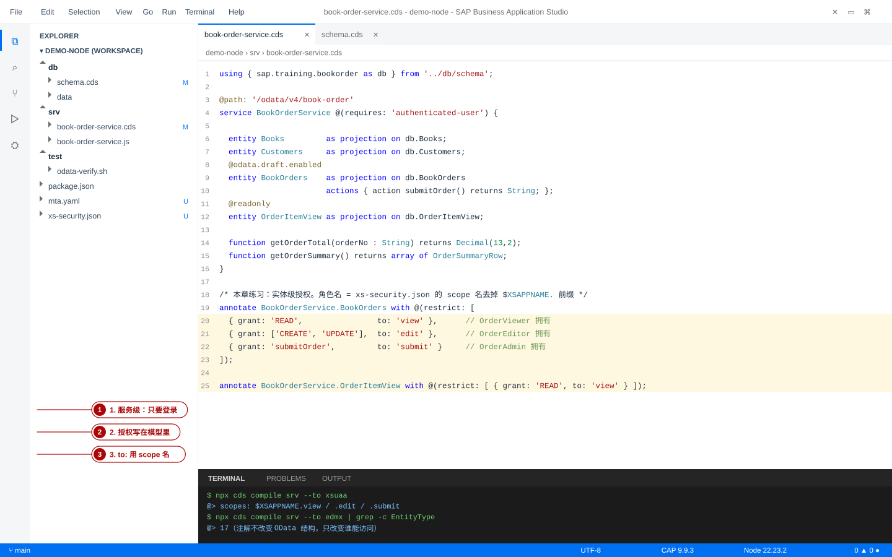
8. @readonly / @Capabilities、实例级条件与它们的边界
8-1 静态访问控制 ≠ 权限控制
cdsservice BookOrderService @(requires: 'authenticated-user') { @readonly entity OrderItemView as projection on db.OrderItemView; // 对所有人只读 @insertonly entity Orders { /* ... */ } // 对所有人只允许插入 @Capabilities: { InsertRestrictions.Insertable: true, UpdateRestrictions.Updatable: true, DeleteRestrictions.Deletable: false } entity Foo { key ID : UUID; } }
| 注解 | 作用范围 | 它是授权吗 | 和 @restrict 的关系 |
|---|---|---|---|
@readonly | 对所有用户一致 | 不是——它不区分用户 | 等价于 @restrict: [{ grant: 'READ' }]（默认 to: 'any'） |
@insertonly | 同上 | 不是 | 等价于只授予 CREATE |
@Capabilities（OData 词汇表） | 同上，由运行时强制执行 | 不是 | 关闭某类操作；与用户角色无关 |
@restrict / @requires | 按用户角色/属性 | 是 | — |
@readonly 当权限控制是最常见的误解
示范项目的 OrderItemView 用 @readonly，意思是「这个只读视图不允许任何写操作」——
它是接口契约，不是「只给某些人看」。要让「只有管理员能看汇总」，仍然要写
@(restrict: [{ grant: 'READ', to: 'view' }])。8-2 实例级授权：where 怎么写才对
cds/* ① 只看自己创建的记录（managed 提供的 CreatedBy） */ annotate Orders with @(restrict: [ { grant: ['READ', 'UPDATE', 'DELETE'], where: (CreatedBy = $user) } ]); /* ② 按用户属性过滤：用户属性 / 实体字段可以互相比较 */ annotate BookOrders with @(restrict: [ { grant: 'READ', to: 'view', where: (customer.country = $user.country) } ]); /* ③ 通过 exists 子查询（ACL 思路）：只有项目成员能读该项目 */ annotate Projects with @(restrict: [ { grant: ['READ', 'WRITE'], where: (exists members[userId = $user and role = 'Editor']) } ]);
- 动作：把
where写成 CDS 编译器表达式（不要写成字符串拼 SQL），并在本地用带attr的 mock 用户测； 上面第 ② 条里的customer.country是关联路径，CAP 支持在where里用路径导航。 - 验证：
npx cds compile srv --to sql与--to edmx都应无 error； 运行时用两个不同attr的用户请求同一资源，结果集应不同（读被过滤）。
$user.<attr>是值的列表：命中列表里任一值即成立；属性为空/未定义 → 条件为 false（用户被完全挡住）。where对标准事件的作用不同：READ是结果过滤，UPDATE/DELETE是拒绝条件； Java 还会校验CREATE/UPDATE的输入数据（不满足返回 400），Node.js 对CREATE只支持不含模型引用的简单表达式（如where: $user.level = 2）。- XSUAA 的属性默认
valueRequired: true；确实要做「不限范围」的属性，需要把属性设成valueRequired: false并把条件写成$user.country = countryCode or $user.country is null—— 文档明确警告这种写法很容易变成越权，优先用「一个角色带条件 + 另一个角色不带条件」的写法。
9. XSUAA 实例、xs-security.json 与 mta.yaml 的接线
9-1 xs-security.json 的五个段
| 字段 | 作用 | 关键规则 |
|---|---|---|
xsappname | 应用标识，决定所有 scope 的前缀 | 字符集限定 a-z A-Z 0-9 - _ / \，≤100 字符；同一子账户内需唯一 |
tenant-mode | dedicated（默认，每个子账户各自密钥）/ shared / external | 多租户 SaaS 用 shared（application plan） |
scopes | 权限点（$XSAPPNAME.xxx） | 本地 scope 必须带 $XSAPPNAME 前缀；跨应用引用写成 $XSAPPNAME(application,其它应用) |
attributes | 行级授权用的属性（name / valueType（string|s、int、date）/ valueRequired） | 属性值来自 cockpit 静态分配或 IdP；默认 valueRequired: true |
role-templates | 角色的模板：name / description / default-role-name / scope-references / attribute-references | 一个模板可聚合多个 scope；带 default-values 的属性引用才能在部署时自动生成角色 |
role-collections（可选） | 预定义角色集合，部署时直接出现在 cockpit | 只能引用同一子账户的 role template；模板必须「无属性引用」或「有默认值」 |
oauth2-configuration（可选） | redirect-uris（approuter 的登录回调）、token-validity、credential-types | 本地联调 XSUAA 时必须把 http://localhost:5000/login/callback 加进 redirect-uris |
这是示范项目里真实维护的 xs-security.json（全文见 源码页）：
json{ "xsappname": "demo-node", "tenant-mode": "dedicated", "description": "图书受注管理 —— CAP 示范项目的授权定义", "scopes": [ { "name": "$XSAPPNAME.view", "description": "查看订单与主数据" }, { "name": "$XSAPPNAME.edit", "description": "创建与修改订单" }, { "name": "$XSAPPNAME.submit", "description": "提交订单（状态迁移，业务上等同于放行）" } ], "attributes": [], "role-templates": [ { "name": "OrderViewer", "description": "订单只读", "scope-references": [ "$XSAPPNAME.view" ] }, { "name": "OrderEditor", "description": "订单维护（新建与修改，含明细）", "scope-references": [ "$XSAPPNAME.view", "$XSAPPNAME.edit" ] }, { "name": "OrderAdmin", "description": "订单管理员：可提交订单并触发状态迁移", "scope-references": [ "$XSAPPNAME.view", "$XSAPPNAME.edit", "$XSAPPNAME.submit" ] } ] }
view / edit / submit），CAP 生成器也会默认用 to: 的名字当 scope 名。
很多项目更喜欢「域 + 动作」的带点写法，例如
$XSAPPNAME.BookOrder.View / $XSAPPNAME.BookOrder.Edit / $XSAPPNAME.BookOrder.Submit，
此时 CDS 里就要相应写 to: 'BookOrder.View'。规则只有一条：两边逐字对应（scope 名 = 角色名 + xsappname 前缀），
用哪种风格都可以，但不要一半点号一半没有。role-template 名则可自由起名（示范项目里的 OrderAdmin 就等于「订单管理员」这个业务角色）。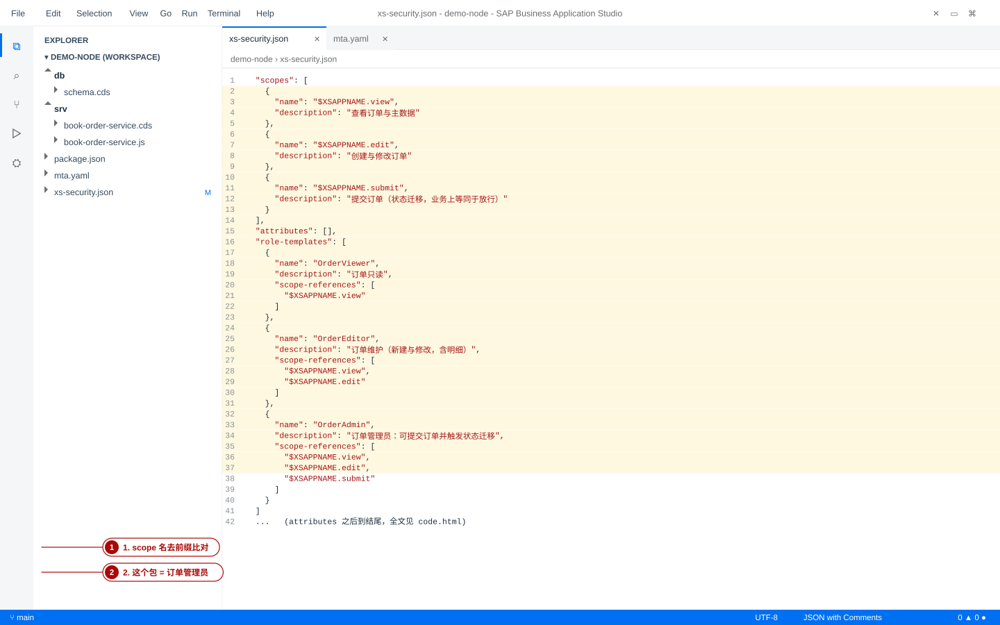
9-2 三个名字，别混
| 名字 | 写在哪 | 示范项目的值 | 谁在用它 |
|---|---|---|---|
| scope 名（全名） | xs-security.json 的 scopes | $XSAPPNAME.submit，部署后是 demo-node-trial-dev.submit | XSUAA 放进 JWT 的 scope |
| CAP 角色名 | CDS 的 to: / @requires | submit | CAP 运行时（等于 scope 名去掉 xsappname 前缀） |
| role-template 名 | xs-security.json 的 role-templates[].name | OrderAdmin（= 订单管理员） | 管理员在 cockpit 组装角色集合时看到的模板；它本身不是 CAP 角色 |
| 角色（cockpit 上的实例） | 由模板实例化，编译/部署时生成 | OrderAdmin (demo-node trial-dev) | 被加进角色集合 → 用户 → JWT |
to: 必须写 CAP 角色名（示范项目是 view / edit / submit），
不能写 role-template 名（OrderAdmin）。两者在 cockpit 上都叫「角色」，但只有 scope 会被放进 JWT。9-3 由模型生成描述符（并核对一致性）
bash$ npx cds compile srv --to xsuaa # 只写 authenticated-user 时：三个空数组 { "scopes": [], "attributes": [], "role-templates": [] } $ npx cds compile srv --to xsuaa # 加上 to: 'view' / 'edit' / 'submit' 之后 { "scopes": [ { "name": "$XSAPPNAME.view", "description": "view" }, { "name": "$XSAPPNAME.edit", "description": "edit" }, { "name": "$XSAPPNAME.submit", "description": "submit" } ], "attributes": [], "role-templates": [ { "name": "view", "description": "generated", "scope-references": [ "$XSAPPNAME.view" ], "attribute-references": [] }, ... ] } $ npx cds add xsuaa --for production # 落成 xs-security.json 并给 package.json 加 [production] 档 Successfully added features to your project
两件事要注意：「只有 authenticated-user」不会生成任何 scope（伪角色不需要授权数据）；
生成器的 role-template 名默认就是 to: 名，示范项目手工改成了语意更好的
OrderViewer / OrderEditor / OrderAdmin——scope 引用必须保持一致，
这是 CAP 文档明确提醒的：手工改过 xs-security.json 后，scope 名要与 CDS 里的角色名严格对应，因为运行时按它比对。
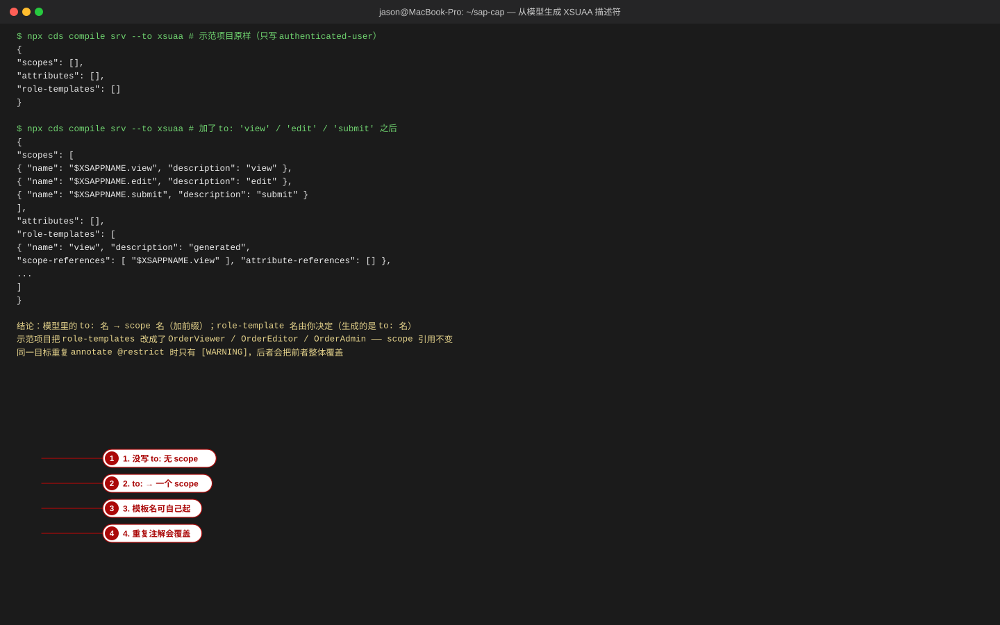
mta.yaml 如何引用它
yamlmodules: - name: demo-node-srv type: nodejs path: gen/srv requires: - name: demo-node-db - name: demo-node-uaa # 绑定 XSUAA 实例 - name: demo-node-approuter type: nodejs path: approuter requires: - name: demo-node-uaa # approuter 也要绑，才能发起登录 - name: srv-api group: destinations properties: name: srv-api # 必须与 xs-app.json 的 destination 同名 url: ~{srv-url} forwardAuthToken: true # ★ 把用户 JWT 转发给后端 resources: - name: demo-node-uaa type: org.cloudfoundry.managed-service parameters: service: xsuaa service-plan: application # 普通应用用 application；多租户 SaaS 用 broker path: ./xs-security.json # ★ 描述符文件在这里被引用 config: xsappname: demo-node-${org}-${space} tenant-mode: dedicated
- 动作：把
resources里的 xsuaa 资源path指向描述符文件；service-plan选application（应用自己的 OAuth 客户端）或broker（多租户订阅场景）。 - 动作：在
config里固定xsappname（示范项目用demo-node-${org}-${space}，避免同子账户重名）。 mta.yaml 的config与文件内容会合并，冲突时以 MTA 的配置优先。 - 动作：approuter 的 destination 上加
forwardAuthToken: true，并在xs-app.json的路由上声明authenticationType: xsuaa（示范项目两个路由都设了）；否则后端收到的请求里没有Authorization头 → 匿名 → 401。 - 验证：
npx cds build --production后检查gen/；mbt build打包前用python3 -c "import yaml,sys;yaml.safe_load(open('mta.yaml'))"或编辑器插件确认 YAML 合法； 部署后cf env demo-node-srv里应出现VCAP_SERVICES.xsuaa段（第 11 节）。
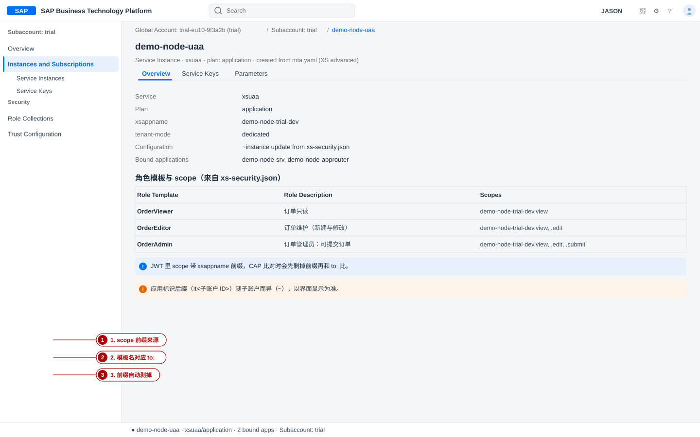
10. 手顺：让「只有订单管理员能提交订单」真正生效
这是把 6–9 节串起来的一条完整链路。示范项目当前只做了服务级
@requires: 'authenticated-user'（任何登录用户都能提交订单），下面是把它收紧到「订单管理员」的六步。
- 动作（模型）：在
srv/book-order-service.cds末尾追加实体级授权，动作只授予submit角色：
验证：cds/* 角色名 = xs-security.json 的 scope 名去掉 $XSAPPNAME. 前缀 */ annotate BookOrderService.BookOrders with @(restrict: [ { grant: 'READ', to: 'view' }, // OrderViewer 拥有 { grant: ['CREATE', 'UPDATE'], to: 'edit' }, // OrderEditor 拥有 { grant: 'submitOrder', to: 'submit' } // OrderAdmin 拥有 ]); annotate BookOrderService.OrderItemView with @(restrict: [ { grant: 'READ', to: 'view' } ]);npx cds compile srv --to sql无 error；npx cds compile srv --to xsuaa输出三个 scope （$XSAPPNAME.view / .edit / .submit），与项目里手工维护的xs-security.json一致。 - 动作（授权数据）：确认
xs-security.json里scopes的名称与上一步一致， 并且OrderAdmin模板引用了$XSAPPNAME.submit（第 9-1 节的全文）。 验证：把两边的名字逐字对照一次——差一个前缀或大小写，云端就是 403。 - 动作（部署描述）：确认
mta.yaml的demo-node-uaa资源带着path: ./xs-security.json与service-plan: application，且 srv / approuter 都requires它。 验证：npx cds build --production→mbt build -t mta_archives生成.mtar无报错。 - 动作（本地先验证）：在
package.json里按 4-2 配好zoe: roles: ['view','submit']、alice: roles: ['view']，用第 5 节的两条 curl 打一遍。 验证：alice 提交 → 403；zoe 提交 → 200 且返回「订单 BO-1001 已提交…」。本地先立好基线，云端出问题才知道该怀疑谁。 - 动作（部署 + 角色集合）：
cf deploy mta_archives/demo-node_1.0.0.mtar -f，然后在 cockpit Subaccount → Security → Role Collections 新建订单管理员，加入应用demo-node-trial-dev的角色OrderAdmin，再把用户邮箱加进 Users。 验证：角色集合详情里OrderAdmin一行存在，Users 列表里能看到你的账号；用户那边要重新登录后才生效。 - 动作（用 JWT 验证）：按第 11 节取用户 token，然后：
验证：三态齐全（403 / 200 / 401），且换成一个只被分配了bash$ SVC=https://trial-dev-demo-node.cfapps.ap10.hana.ondemand.com/odata/v4/book-order $ curl -s -o /dev/null -w '%{http_code}\n' -H "Authorization: Bearer $(cat /tmp/other.jwt)" "$SVC/BookOrders?\$top=1" 403 # 有身份（用了技术用户 token）但没有业务 scope $ curl -s -o /dev/null -w '%{http_code}\n' -H "Authorization: Bearer $(cat /tmp/user.jwt)" "$SVC/BookOrders?\$top=1" 200 # 订单管理员用户 token，scope 里有 view / submit $ curl -s -o /dev/null -w '%{http_code}\n' "$SVC/BookOrders?\$top=1" 401 # 不带 Authorization 头OrderViewer的用户， 提交动作应得 403（能看不能提交）。
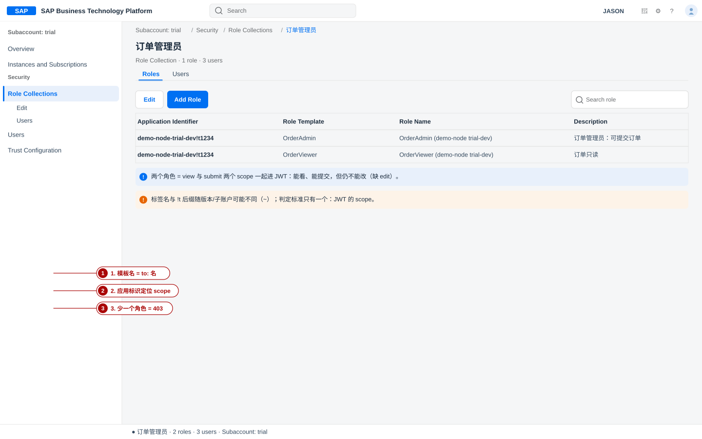
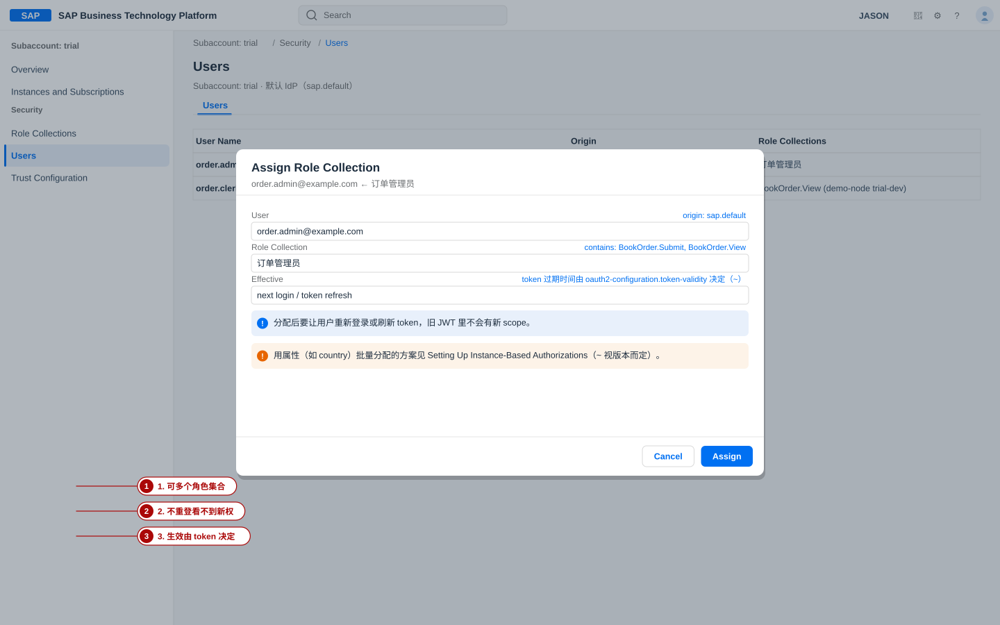
11. 部署后授权如何真正生效
OrderAdmin (demo-node trial-dev) 这样的角色。scope 就是角色集合里的角色对应的 scope。11-1 取凭据：service key 与 cf env
bash# 机器用凭据：为 xsuaa 实例建一个 service key $ cf create-service-key demo-node-uaa demo-key $ cf service-key demo-node-uaa demo-key | tail -n +2 | jq -r '.credentials.url' https://trial-dev-demo-node.authentication.ap10.hana.ondemand.com # 应用实际绑定的是什么（排查 401 的第一手材料） $ cf env demo-node-srv | jq -r '.VCAP_SERVICES.xsuaa[0].credentials.xsappname' demo-node-trial-dev
cf service-key 的输出第一行是提示文字，所以要用 tail -n +2 才能直接喂给 jq。
凭据里可用的键随绑定方式与平台版本会有差异（url 与 uaa.url 两种形态都见过）——用
jq '.credentials | keys' 先看一眼自己环境里到底有什么。
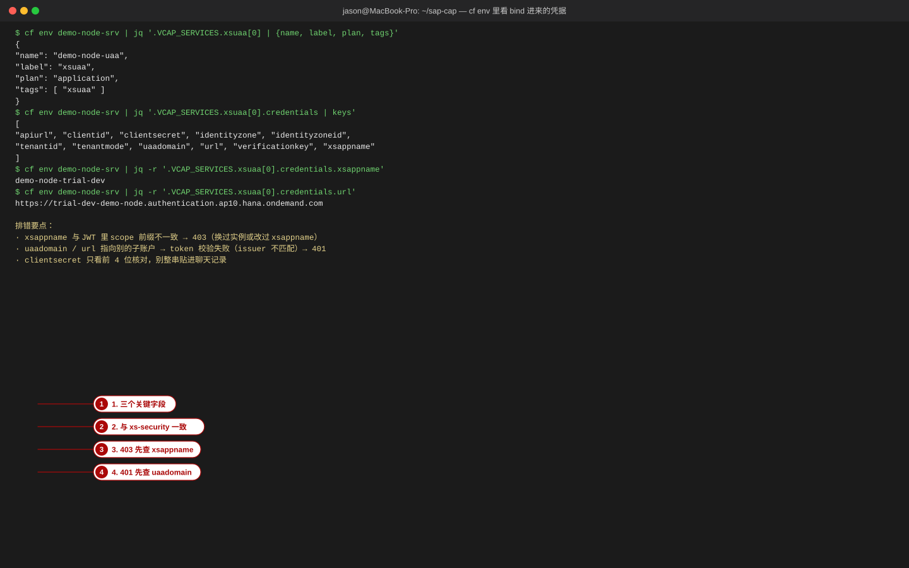
11-2 取 JWT：两条路
bash$ TOKEN_URL="$(cf service-key demo-node-uaa demo-key | tail -n +2 | jq -r '.credentials.url')/oauth/token" $ CLIENT_ID=$(cf service-key demo-node-uaa demo-key | tail -n +2 | jq -r '.credentials.clientid') $ export CLIENT_SECRET='<只放在环境变量里，不要写进脚本和聊天记录>' # ① client_credentials：技术用户（后端对后端 / 冒烟测试） $ curl -s -X POST "$TOKEN_URL" -u "$CLIENT_ID:$CLIENT_SECRET" \ -d 'grant_type=client_credentials' | jq -r .access_token | cut -c1-32 eyJhbGciOiJSUzI1NiIsImtpZCI6ImRlZmF1bHQifQ # ② password：业务用户（需要该 OAuth 客户端允许 password 授权，且用户在默认 IdP 能直接登录）（~ 视 IdP 策略） $ curl -s -X POST "$TOKEN_URL" -u "$CLIENT_ID:$CLIENT_SECRET" \ -d 'grant_type=password&username=order.admin@example.com&password=<口令>' \ | jq -r .access_token > /tmp/user.jwt # 不装 jwt 工具也能看 payload：base64url 解第二段 $ python3 -c "import sys,json,base64;p=sys.stdin.read().split('.')[1];print(json.loads(base64.urlsafe_b64decode(p+'='*(-len(p)%4)))['scope'])" < /tmp/user.jwt ['openid', 'demo-node-trial-dev.view', 'demo-node-trial-dev.submit']
- client_credentials 得到的是技术用户：CAP 会把它映射成
system-user（自带的客户端再额外得到internal-user）， 业务角色一个也没有——所以拿它去调业务接口几乎必然 403，它适合验证「token 端点通不通」。CAP 里要给技术用户开的口子，注解写@requires: 'system-user'。 - password（或 UI 登录）得到的是业务用户：JWT 的
scope与角色集合一致，是验证业务授权唯一可信的方式。
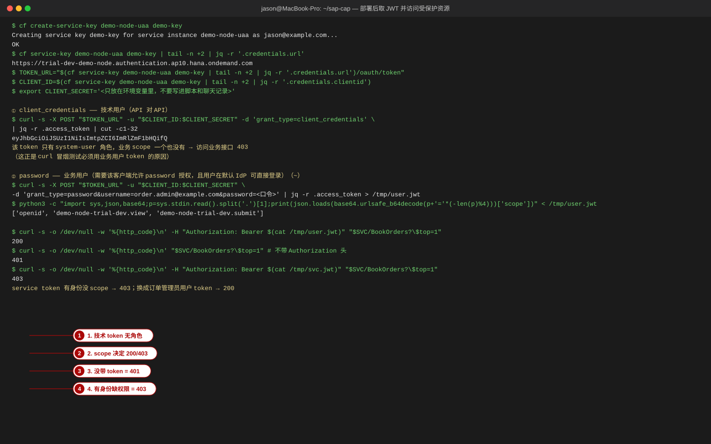
11-3 访问受保护资源：三态对照
| 请求 | 状态码 | 含义 | 下一步查什么 |
|---|---|---|---|
不带 Authorization | 401 | 没有凭据 | approuter 是否转发（forwardAuthToken / authenticationType） |
| 带过期/错实例的 token | 401 | 凭据无效（签名或 issuer 不匹配） | cf env 里的 url / uaadomain 是否与签发端一致 |
| 带技术用户 token | 403 | 身份有效但无业务 scope | 换 password 流的业务用户 token |
| 带业务用户 token 但缺角色 | 403 | scope 里没有 to: 要求的那个 | JWT 的 scope 与 to: 逐字比对（含前缀剥离） |
| 带业务用户 token 且角色齐全 | 200 | 授权通过 | — |
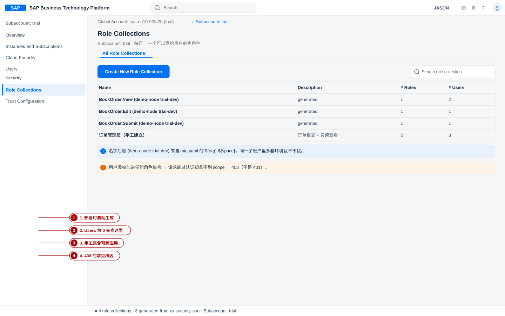
12. 常见错误表
按「先看状态码 → 再按顺序查链路」使用。每一行都给出怎么确认，不要凭猜改配置。
| 现象 | 最可能的原因 | 怎么确认 | 对策 |
|---|---|---|---|
| 匿名请求 401，但你的用法就是要匿名 | 服务被 @requires 覆盖，或生产下隐式 authenticated-user | cds env get requires.auth 看 restrict_all_services；看服务级注解 | 把该实体/服务显式标成 @(requires: 'any')，或调整 restrict_all_services |
| 带着 token 却 401（不是 403） | token 过期 / 签名校验失败 / 绑错了 xsuaa 实例（issuer、audience 不匹配） | 解 JWT 看 exp、iss、aud；cf env 比对 credentials.url 与 xsappname | 重新取 token；核对应用绑定的实例与签发端是同一个 |
| 403，但用户在 cockpit 里明明有角色集合 | scope 名与 CDS 的 to: 不一致（前缀、大小写、拼写） | 打印 JWT 的 scope，与注解逐个字符比对 | 统一命名：CDS 用 scope 名去前缀，或反之调整描述符 |
403，且 scope 里确实有需要的角色 | to: 写的是 role-template 名（如 OrderAdmin）而不是 CAP 角色名（submit） | 对照 9-2 的三名字表 | 把注解改成 CAP 角色名 |
| 403，scope 与名字都对 | 层级未全部通过：服务级要求 A、实体级要求 B，用户只有 B | 把服务的 @requires 与实体的 @restrict 一起列出来 | 补齐该用户缺失的那一层，或放宽上层 |
| 本地 mocked 通过，云端 403 | 本地 mock 角色是自己写的字符串，与 XSUAA 的 scope 名无关 | 把本地 mock 的 roles 与云端 scope 并排看 | 本地就用 view / submit 这种最终角色名 |
| 匿名也是 200，怎么测都不 401 | kind: dummy | cds env get requires.auth.kind | 改回 mocked（或 basic） |
| 本地一切都 200（含匿名） | 注解没生效：profile 覆盖、文件没被加载、或注解写在别的实体上 | cds watch 启动日志里的 loaded model from N file(s) | 确认文件在加载列表里；把注解写到请求目标实体 |
| 用户刚被加进角色集合，仍然 403 | 旧 JWT 里没有新 scope（token 还没刷新） | 解 JWT 看 iat / exp | 让用户重新登录或等 token 过期；排查期间用重新取的 token |
浏览器直接打 /$metadata 得 401 | @requires 默认也保护元数据端点 | 用带 token 的 curl 打同一 URL | 需要公开元数据时用特权用户中间件放行，或（Java）关掉元数据认证 |
| approuter 路由上 401 / 403，直连 srv 却正常 | xs-app.json 未声明 authenticationType，或 destination 未开 forwardAuthToken | 看 approuter/xs-app.json 与 mta.yaml 的 destination properties | 补上 forwardAuthToken: true 与 authenticationType: xsuaa |
| 把 Destination 配置与 XSUAA 混为一谈 | 概念混淆：Destination 是出站调用目标，XSUAA 是入站认证 | 问「这个请求是别人来调我，还是我去调别人」 | 入站问题查 role collection / JWT；出站问题查 destination + 目标系统的认证方式 |
grant_type=password 返回 unsupported_grant_type | 该 OAuth 客户端不允许 password 授权，或用户在企业 IdP（含 2FA） | 看返回体里的 error_description | 改用 authorization_code（浏览器登录）拿用户 token |
改了 xs-security.json，cockpit 上的角色没更新 | 没有重新部署/更新实例；或角色集合同名更新会清空用户分配 | cf deploy 的输出里是否有服务更新步骤 | 重新部署后核对；改名会重建角色集合，用户分配要重加 |
重复 annotate @restrict 后权限「少了一半」 | 同一目标重复赋值，后者覆盖前者（只有 WARNING） | cds compile srv --to xsuaa 的输出里 scope 少了几条 | 合并到一处；把 WARNING 当错误处理 |
加了 where 但用户还是看到全部数据 | 属性的值为空/未定义时条件为 false（该被挡住）；反之用了 valueRequired: false 又写了 or $user.x is null，就等于放开 | 打印 JWT 里的 xs.user.attributes | 先确认属性真的进了 token，再收紧条件写法 |
| 多租户场景下角色串了子账户 | plan 用错（application vs broker）或 xsappname 不唯一 | cf marketplace -e xsuaa 看当前可用的 plan | 多租户用 broker plan，并在 config 里固定唯一的 xsappname |
13. 安全基线清单（生产必须做）
配置与模型
- 生产 profile 里
auth.kind明确设为xsuaa（或jwt），绝不允许mocked/dummy进入生产；[production]档要在package.json里显式写出。 - 每一个暴露的服务都有显式授权（
@requires/@restrict），不依赖「隐式 authenticated-user」这一个默认值兜底。 - 敏感实体不靠关联路径兜底：为它建独立服务实体并单独写授权（Node.js 不检查 expand 出的关联实体）。
where条件用编译器表达式并配单元测试（两个不同属性的用户 → 结果集不同）。
凭据与运行
- 角色集合按最小权限发放：能只给
OrderViewer就不要给OrderAdmin；clientsecret只通过 service key / 环境变量传递，不进 Git、不进日志、不贴聊天。 - 定期审计角色集合与用户分配（含离职账号），并给每个 role template 写清
description，让管理员知道发出去的是什么。 - 生产关闭特权用户中间件与认证调试日志（
cds.log.levels.auth: debug不要把 token 打进日志）。 - 把 401 / 403 / 200 三态断言纳入验收脚本与 CI：匿名必须 401、越权必须 403、授权必须 200。
14. 本节测试
- 401 与 403 分别由链路上的哪一环产生？各自该怎么确认原因？
- 为什么测「匿名请求必须 401」时不能用
kind: dummy？用它测出来的结果会是什么？ mocked下-u anyname:whatever也返回 200，原因是什么？要让它只认自己配的用户怎么做？- CDS 里写
to: 'sub'（少一个字母）而xs-security.json里是$XSAPPNAME.submit，会发生什么？为什么？ - 服务级
@requires: 'authenticated-user'与实体级@restrict同时存在时，判断规则是什么？ - 同一实体写了两段
annotate … with @(restrict: […])，最终生效的是哪一段？编译时有什么提示？ @readonly表达的是「只读」还是「权限控制」？要给「只有管理员能读」该怎么写？- 角色集合、角色模板、scope、CAP 角色名，这四者是什么关系？（画一条从
to:到 JWT 的箭头链）
15. 小结
- 认证在 CAP 之外，授权在 CAP 之内：IdP/XSUAA 负责「你是谁」并签发带 scope 的 JWT， CDS 注解 + 运行时负责「你能做什么」；两者用角色名 = scope 名去前缀这一条约定连接。
- 本地测权限用
mocked，不要用dummy：dummy会把匿名请求也放行， 让你对 401/403 的判断全部失效；mocked的默认用户既没有密码还有"*": true，也要显式收紧。 - 403 是排查目标，不是结论：按「模型 → 描述符 → MTA → 角色集合 → JWT → 请求头」的顺序查，
每一环都有一个命令可看（
cds compile … --to xsuaa、cf deploy、cockpit、解 JWT、cf env）。
配套：源码页 有 xs-security.json / mta.yaml / xs-app.json 全文；
速查页 收录了本章全部 cds / cf / curl 命令与注解写法；
排错页 按错误信息汇总了第 12 节的条目；
任务索引 里有本章的实训任务与完成基准。